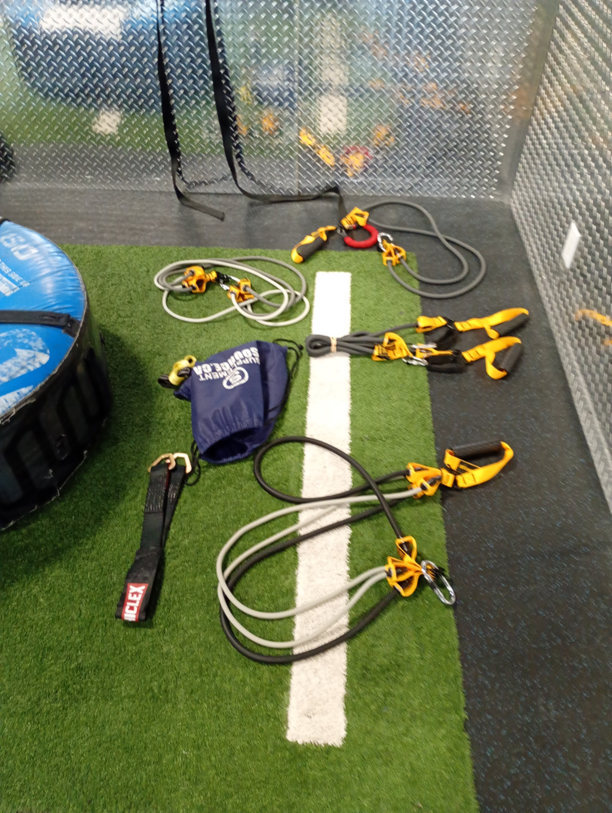
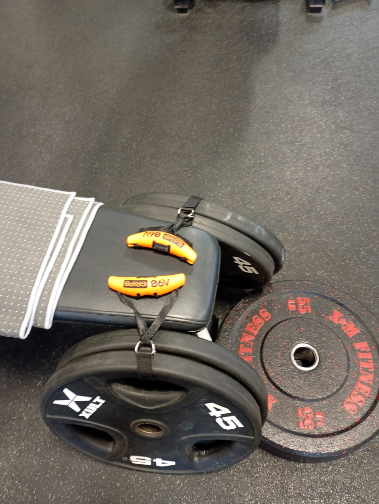
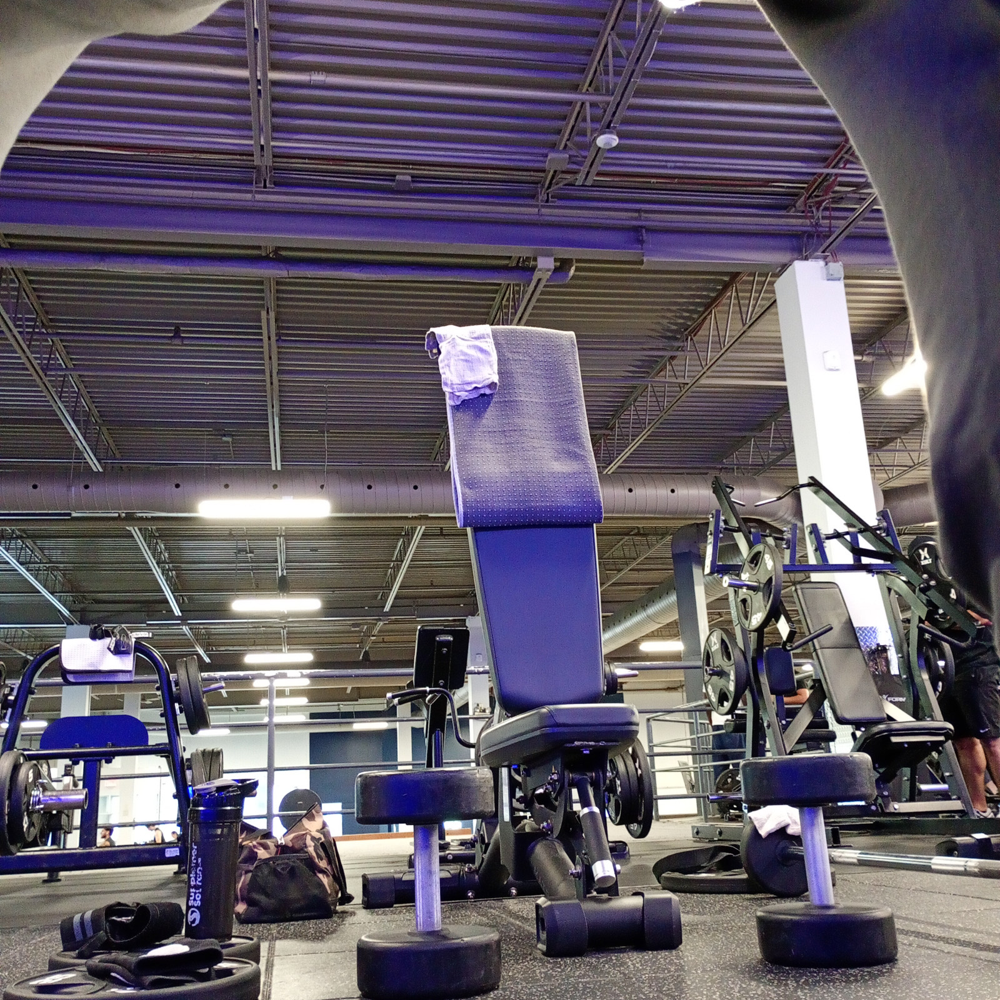
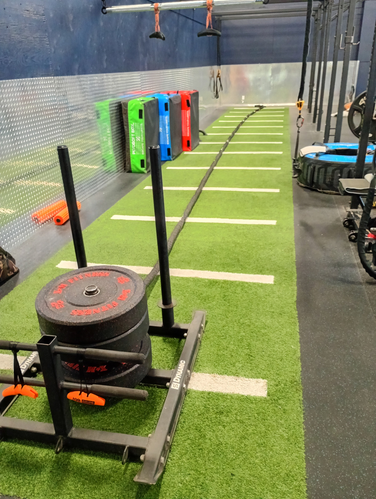

Resistance Band Series 001
The portable band station in use, showing the relationship between the anchor, band path and working grip.
8-second excerpt from the recorded session; audio omitted.
Watch the linked session →The portable resistance-band setup, real full-body sessions, and the repeatable routine behind recovery and rebuilding.
Training is the movement half of Project 100. The portable band setup connects the rig, anchors, grips and bench into changing session configurations—alongside free weights and full-body work.
These are my recorded sessions and equipment arrangements. Recovery and rebuilding are the purpose of the routine; a photograph or reel alone does not measure a recovery outcome.
The portable band station in use, showing the relationship between the anchor, band path and working grip.
8-second excerpt from the recorded session; audio omitted.
Watch the linked session →A kneeling setup with paired handles, taken from the clean session edit.
8-second excerpt from the recorded session; audio omitted.
Watch the linked session →A supported, forward-leaning handle sequence with an elevated attachment path.
8-second excerpt from the recorded session; audio omitted.
The wider training routine combines multiple movement patterns. This excerpt adds full-body context to the dedicated band sessions.
8-second excerpt from the recorded session; audio omitted.

Ropes, straps and handles laid out before assembly. Each component belongs to a specific working connection, rather than a decorative equipment display.

A closer equipment view complements the existing manifest. Exact working load must come from the session record, not a plate count in another photograph.

Support surfaces and nearby free weights provide the setting for combined sessions.

The lane and sled add floor-level context to the broader gym layout.
Existing rig gallery → Anchors and straps → Grips and handles →
The existing equipment manifest records four KUZARO kits, six named configurations and a separate HPYGN system. The numbers below are nominal tube ratings, not measured force at a specific stretch.
| Configuration | Recorded composition | Manifest focus |
|---|---|---|
| Juggernaut | 3 × 85 lb · 255 lb nominal | Chest / pressing |
| Titan | 3 × 65 lb · 195 lb nominal | Back / rows and lat work |
| Enforcer | 3 × 55 lb · 165 lb nominal | Triceps |
| Viper | 3 × 45 lb · 135 lb nominal | Drop sets / finishers |
| Scalpel | 3 × 35 lb · 105 lb nominal | Delts / isolation |
| Twin Cobras | 2 separate 75 lb tubes · one per hand | Unilateral curls |
The manifest records Renfrew cloth tape at the joint loops and eight JRSGS carabiners in the bundle setup. Twin Cobras use individual factory clips.
The HPYGN system is listed as a 330 lb set. Its recorded short-band configuration uses two nominal 65 lb bands at the low anchor with the Tribe bar. Changing band length, routing or stretch changes tension; 130 lb of listed tube ratings is not a measured working load.
Original resistance-band specifications →Diagram of component order only. It does not certify an anchor, a hardware rating or a safe configuration. The real-session frames above show how the elements appear in the recorded setup.
EZ-bar work from the clean arms reel adds the free-weight side of the session library.
8-second excerpt from the recorded session; audio omitted.
Watch the linked session →A recorded free-weight sequence complements the portable band system; it is not a substitute for the original session log.
8-second excerpt from the recorded session; audio omitted.
The protocol connects training, nutrition, recovery and tracking. Keep the session setup, selected bundle, repetitions, perceived effort and next-day response together in the log, so a configuration can be repeated and compared.
Session titles follow the source edits. Equipment descriptions follow the existing manifest; detailed exercise naming will be reconciled with the owner’s setup terminology.